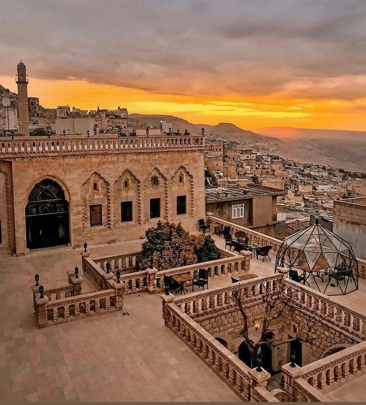

Dara Antik Kenti
Mezopotamya'nın Efes'i olarak bilinen bu antik Roma garnizon kenti, devasa su sarnıçları ve kaya mezarlarıyla büyüleyicidir.
Taşın Şiire Dönüştüğü Yer
Güneydoğu Anadolu Bölgesi'nin en büyüleyici şehirlerinden biri olan Mardin, farklı dinlerin ve dillerin yüzyıllardır barış içinde bir arada yaşadığı eşsiz bir kültür mozaiğidir. Tarihi İpek Yolu üzerinde bulunan şehir, dar sokakları, abbara adı verilen geçitleri ve taş işçiliğinin zirvesi olan tarihi evleri ile bir açık hava müzesini andırır.

Mezopotamya'nın Efes'i olarak bilinen bu antik Roma garnizon kenti, devasa su sarnıçları ve kaya mezarlarıyla büyüleyicidir.
Süryani Ortodoks inancının en önemli merkezlerinden biri olan manastır, muazzam mimarisi ve safran çiçeklerinden alan adıyla ünlüdür.
Artuklu mimarisinin başyapıtlarından olan medrese, avlusundaki havuzu ve astronomi çalışmalarıyla dönemin bilim merkezidir.